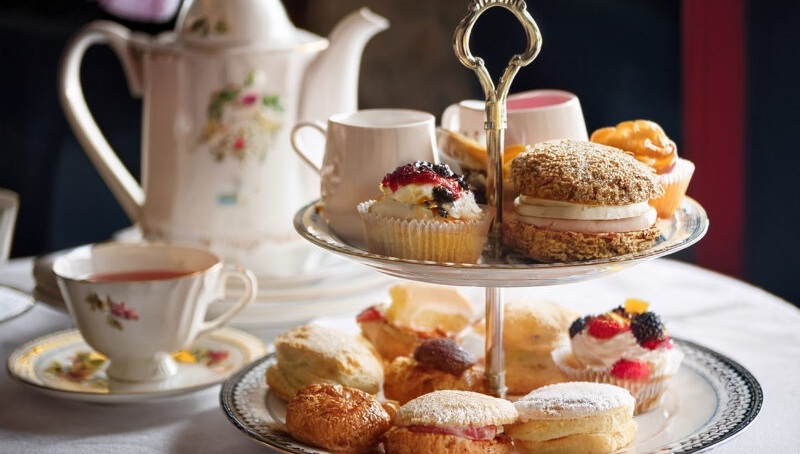

魅惑の紅茶の世界へようこそ
紅茶には作法やルールが多くて、少しだけハードルが高く感じるかもしれません。 でも本当はもっと自由でもっと楽しいものです。 ルールを知ることも、好きに楽しむことも、どちらも間違いではありません。 この場所が、あなたなりの紅茶の時間を見つけるきっかけになれば嬉しいです。
簡単！紅茶の楽しみ方
内容:難しい専門知識は省いて、すぐ試せる内容。ティーバッグでも美味しく飲むコツやアレンジ方法など。 更新スケジュール:「定期更新」月一更新
おすすめの紅茶の紹介
内容:自分が食べ歩いたお店の紹介を写真入りで行う。好きな紅茶のブランド紹介や購入した茶葉の紹介。 更新スケジュール:「固定」毎週水曜日
おすすめの茶器の紹介
内容:好きな茶器ブランド紹介。購入品を写真と共に更新。ティーカップ＆ソーサーからミルクポットまで様々な茶器をボーンチャイナなどの素材も明確に詳細。注意点なども。 更新スケジュール:「固定」毎週水曜日
お知らせ
公開日：
GitHub Pagesでサイトを公開しました。